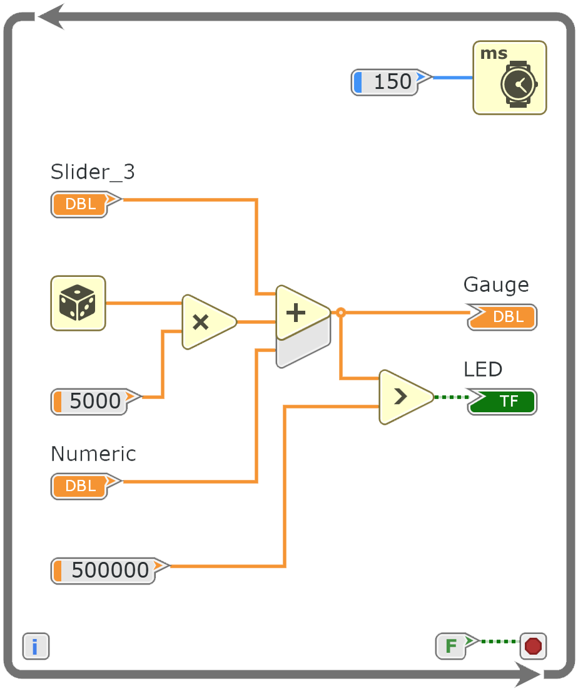
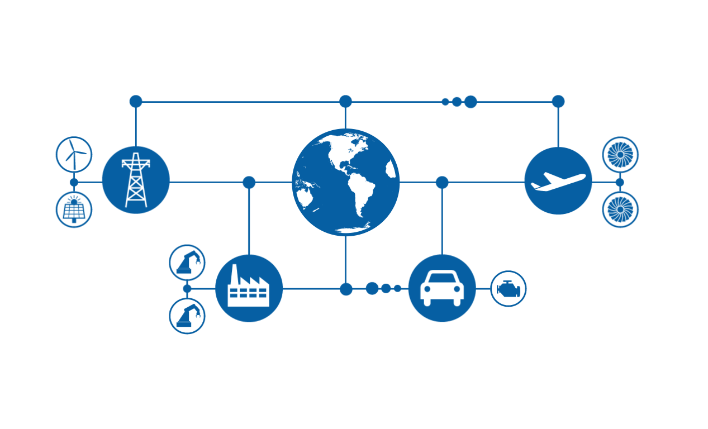

WebVI
LabVIEW on the Web
WYSIWYG HTML Panels
Portable and Embeddable

LabVIEW on the Web
Client Side Logic in G
No Plugins Required

I/O for IoT
NI Data Services
LabVIEW HTTP Client
Vireo Runtime
Compact, Portable, Open Source


We're just getting started
Just-in-time Web Dashboards
Multi Device Layouts
Serverless Compute